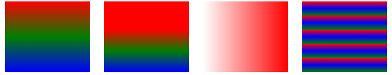
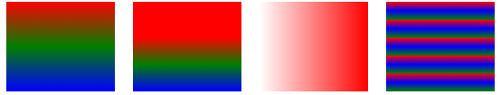

上一篇文章：js/jq 两种方法分别实现返回顶部功能效果
前不久在确定网页背景颜色时，一朋友看到了一张背景颜色渐变的图片说觉得不错，显的高大上一些。在之前需要渐变的背景颜色是放做好的效果图片的，可是对于网页的性能并不是很好，处理起来也不是很方便。现在CSS3的渐变就能很好的实现背景颜色渐变，实现你想要的绚烂效果。
CSS3定义了两种类型的渐变：
1.线性渐变（linear-gradients)
2.径向渐变(radial-gradiients）
先介绍线性渐变:
现在的语法格式是：
<linear-gradient> = linear-gradient(
[ <angle> | to <side-or-corner> ,]? <color-stop> [, <color-stop>]+ )
\---------------------------------/ \----------------------------/
定义角度 颜色停止列表
<side-or-corner> = [left | right] || [top | bottom]
<color-stop> = <color> [ <length> | <percentage> ]?
上述值用来表示渐变的方向，可以使用角度或者关键字来设置：
<angle>：
用角度值指定渐变的方向（或角度）。它由2个关键字组成：第一个表示水平面，左或右，以及二个垂直侧，顶部或底部。顺序是不相关的，每个关键字是可选的。如果省略，则默认为底部。
上、下、左、右转换成角度分别为0度，180度，270deg，90度。（顺时针旋转）渐变线的终点是起点在中心盒其他方向的对称点。（即上到下，下到上，左到右，右到左）
用角度值指定渐变的方向（或角度）。
<color-stop>：用于指定渐变的起止颜色
<color>：指定颜色。
<length>：
用长度值指定起止色位置。不允许负值
<percentage>：
用百分比指定起止色位置。
以下介绍下多种渐变
background: linear-gradient(red, blue); /* 默认的从上到下渐变 */
background: linear-gradient(to right,red,blue); /* 从左到右渐变 */;
background: linear-gradient(to bottom right,red,blue); /* 对角渐变 */;
background: linear-gradient(70deg, red, blue); /* 设定角度渐变 */
background:linear-gradient(red ,red,blue);/*均匀渐变*/
background:linear-gradient(red 40% ,green,blue);/*竖直方向上40%都是红色*/
background: linear-gradient(to right, rgba(255,0,0,0), rgba(255,0,0,1));
/* 使用透明度从左向右渐变rgba() 函数中的最后一个参数
可以是从 0 到 1 的值，它定义了颜色的透明度：0 表示完全透明，1 表示完全不透明。 */
background: repeating-linear-gradient(red, blue 10%, green 20%);/*重复的线性变化*/
为了兼容不同的浏览器，需要加上其私有前缀，如：
background: -webkit-linear-gradient(red, blue); /* Safari 5.1 - 6.0 */
background: -o-linear-gradient(red, blue); /* Opera 11.1 - 12.0 */
background: -moz-linear-gradient(red, blue); /* Firefox 3.6 - 15 */
background: linear-gradient(red, blue); /* 标准的语法 */
以上各自的效果图如下（按顺序排列)
 

接下来介绍径向渐变（radial-gradients)
径向渐变由它的中心定义。
现在的语法格式是：
radial-gradient( [ circle || <length> ] [ at <position> ]? ,
| [ ellipse || [<length> ①| <percentage>① ]] [ at <position> ]? ,
| [ [ circle | ellipse ] || <extent-keyword> ] [ at <position> ]? ,
| at <position> ,<color-stop> [ , <color-stop> ]+ )
<extent-keyword> = closest-corner | closest-side | farthest-corner | farthest-side
<color-stop> = <color> [ <percentage>② | <length>② ]?
<position > 确定圆心的位置。如果提供2个参数，第一个表示横坐标，第二个表示纵坐标；如果只提供一个，第二值默认为50%，即center
<percentage >①：
用百分比指定径向渐变圆心的横坐标值。可以为负值。
<length >①：
用长度值指定径向渐变圆心的横坐标值。可以为负值。
left：
设置左边为径向渐变圆心的横坐标值。
center①：
设置中间为径向渐变圆心的横坐标值。
right：
设置右边为径向渐变圆心的横坐标值。
<shape >确定圆的类型
circle：
指定圆形的径向渐变
ellipse：
指定椭圆形的径向渐变。
< extent-keyword > circle | ellipse 都接受该值作为 size
closest-side：
指定径向渐变的半径长度为从圆心到离圆心最近的边
closest-corner：
指定径向渐变的半径长度为从圆心到离圆心最近的角
farthest-side：
指定径向渐变的半径长度为从圆心到离圆心最远的边
farthest-corner：
指定径向渐变的半径长度为从圆心到离圆心最远的角
以下介绍下多种渐变
background: radial-gradient(red, green, blue); /* 不同颜色结点均匀分布*/
background: radial-gradient(circle, red, yellow, green); /* 设置圆形渐变 */
/* 指定径向渐变的半径长度为从圆心到离圆心最近的边 */
background: radial-gradient(60% 55%, closest-side,blue,green,yellow,red);
/* 指定径向渐变的半径长度为从圆心到离圆心最远的角*/
background: radial-gradient(60% 55%, farthest-corner,blue,green,yellow,red);
/* 重复的径向渐变*/
background: repeating-radial-gradient(#f60, #ace 5px, #f96 5px, #f96 10px);
/*由圆心透明渐变*/
background: -webkit-radial-gradient(rgba(255,0,0,0), rgba(255,0,0,1));
以上各自的效果图如下（按顺序排列)
下一篇文章：